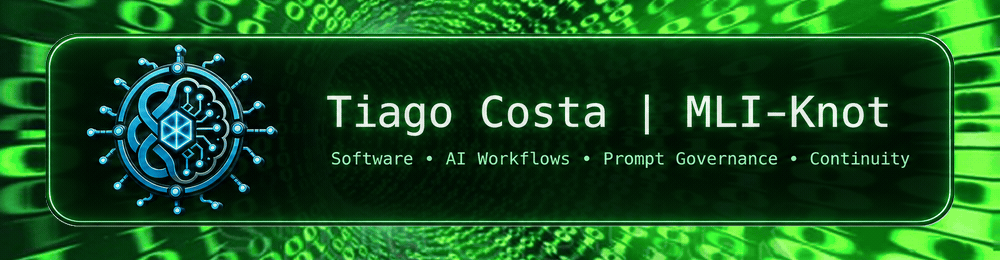

What it is
A governance processor that prepares explicit context before inference and validates candidate-result structure afterward.
A sanitized public view of context governance, a stateless environment-agnostic core, optional MCP exposure, provider-neutral inference integration and explicit execution boundaries.

A governance processor that prepares explicit context before inference and validates candidate-result structure afterward.
It is not the AI model, persistent session memory, a raw-history vault, an MCP identity or an automatic executor.
The synthetic ENV-OTHER case tests portability; it is not evidence of a real third deployment or universal equivalence.
Mind, model, host, MCP and execution remain separate. MCP is optional. Context Agent is an optional external evidence source. A RELEASE disposition is not external execution authorization.
This showcase does not include private source code, full private prompts, real checkpoints, operational paths or hashes, credentials, raw history, personal data or sensitive internal mechanisms.